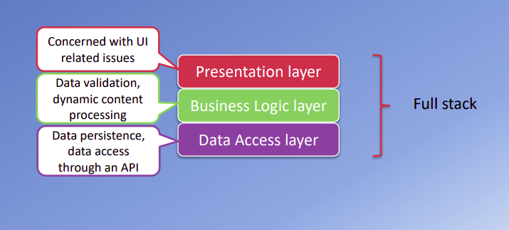
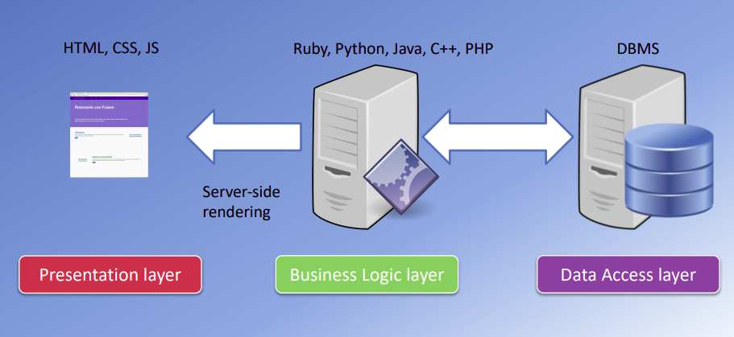
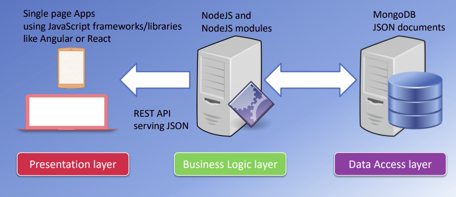

JavaScript has come long way in the last 20 years. JavaScript engine were orginally used only in web browsers, but they are now embedded even in some servers, usually via Node.js. This evolution has made JavaScript a universal language.
Whai is Full Stack Web Development?
Full Stack is the development of both front end/client-side and back end/server-side. Full Stack Web Development can be divided into three major layers: presentation layer, business logic layer, and data access layer. Presentation layer handles UI/UX, business logic layer deals with dyanamic data processing, and data access layer provides data acesss through an API.

How to Become a Full Stack Web Developer?
Firstly, developer should have knowledge of front end technologies like BootStrap, Javascript, React, Angular or Vue in addition to HTML and CSS. Secondly, they should be equally good with backend tools like Node.js, Django, Express and language like Python, ASP.NET, Java, C++, PHP. Finally,they are also required to have knowledge of databases like SQL, MYSQL, SQLite or MongoDB.

Further, a Full Stack developer can specialize into one or many software stack.For instance:
1: MEAN Stack: MONGO | EXPRESS | ANGULAR| NODE
2: MERN Stack: MONGO | EXPRESS | REACT| NODE
3: MEVN Stack: MONGO | EXPRESS | VUE | NODE
4: LAMP Stack: LINUX | APACHE | MYSQL | PHP
5: Django Stack: JAVASCRIPT | PYTHON | DJANGO | MYSQL
Javascript Full Stack
Learning various languages can be cumbersome at times. This is where JavaScript comes in. In JavaScript Full Stack, presentaion layer is built using JavaScript frameworks, such as: React, Angular or Vue. Similarly, business logic layer is constructed with Node.js and node-modules to communicate with front end using REST API serving JSON. Finally, MongoDB is used in data access layer.

There’s trade-off everywhere. JavaScript Full Stack Web Dev is no exception.
Pros - Prototype can be build rapidly. - Common language, better team efficiency with less resources. - Code reusability. - Can switch between front and back end development based on requirements.
Cons - Node.js is not recommended for heavy backend computation and data processing. - Jack of all trades, master of none? May be.